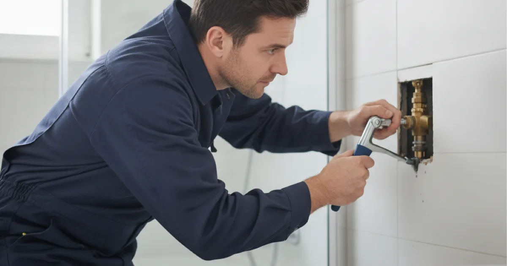

Shower Valve Replacement in Westchester County, NY
If your shower runs hot and cold or drips constantly, the valve is usually to blame. Dan's Drains replaces shower valves to restore steady temperature and pressure.
- Licensed & Insured
- Same-Day Service Available
- Upfront Pricing
- 15+ Years Local Experience

Need a plumber in Westchester County? We can usually help the same day.
Signs Your Shower Valve Is Failing
A failing valve shows up in daily use:
- Water temperature that swings when another fixture runs.
- A shower that drips even when off.
- Difficulty setting a comfortable temperature.
- Handles that are stiff or spin loosely.
A pressure-balancing valve fixes the temperature swings that scald or chill mid-shower.
How We Replace a Shower Valve
We access the valve, remove the old body, and install a new one connected to the hot and cold lines. We test the temperature and pressure and check for leaks before restoring the wall.
If we find other aging shower plumbing, we will point it out rather than close the wall over a future problem — related to our broader shower plumbing work.
Talk to a local Westchester County plumber today.
Shower Valve Types
Modern pressure-balancing and thermostatic valves keep temperature steady and safe. We help you choose the right type for your shower and install it correctly.
A good valve is the difference between a comfortable shower and a daily fight with the handle.
Older Valves in Local Homes
Many bathrooms in this area still have original valve bodies that no longer regulate temperature well. Replacing an old valve is a common, worthwhile upgrade.
Comfortable, safe water temperature is worth getting right, and the CDC information on hot water safety is a useful reminder of why scald protection matters.
When to Call a Pro
Call us when your shower temperature swings, drips, or is hard to control. Replacing the valve is the real fix, not a new showerhead.
If the drip has stained the ceiling below, check for a hidden leak behind the wall too.
Frequently Asked Questions
Why does my shower go hot and cold?
Usually an old or failing valve that cannot balance pressure. A modern pressure-balancing valve keeps the temperature steady even when other fixtures run.
Can you replace the valve without retiling?
Often we access the valve through an existing panel or a small opening. We keep any wall work to the minimum the job requires.
My shower drips even when off — is the valve the cause?
Frequently, yes. A worn valve cartridge lets water through. Replacing the valve or cartridge stops the drip.
What is a pressure-balancing valve?
It is a valve that holds your shower temperature steady when water pressure changes elsewhere in the house, preventing sudden hot or cold surges.
How long does a valve replacement take?
Often a few hours, depending on access. We will give you a realistic estimate up front.
Ready to book? Reach Dan’s Drains for fast, upfront plumbing help.